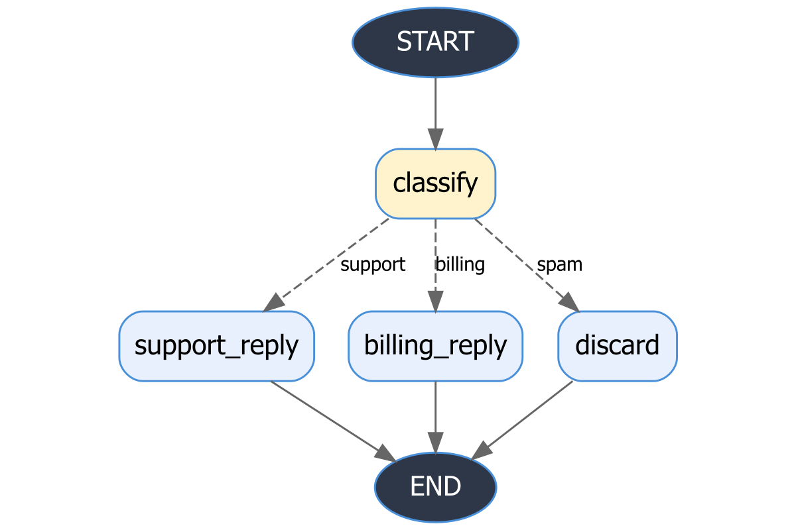

puppeteeR can render your graph structure before execution - useful for sanity-checking topology, sharing diagrams, and documentation. Three engines are supported.
Build a sample graph
schema <- workflow_state(
input = list(default = ""),
research = list(default = ""),
draft = list(default = ""),
status = list(default = "pending")
)
g <- state_graph(schema) |>
add_node("research", function(s, cfg) list()) |>
add_node("write", function(s, cfg) list()) |>
add_node("review", function(s, cfg) list()) |>
add_node("revise", function(s, cfg) list()) |>
add_edge(START, "research") |>
add_edge("research", "write") |>
add_edge("write", "review") |>
add_conditional_edge(
"review",
routing_fn = function(s) if (s$get("status") == "approved") "done" else "needs_work",
route_map = list(done = END, needs_work = "revise")
) |>
add_edge("revise", "write")Mermaid (text output, zero dependencies)
as_mermaid() returns a Mermaid flowchart string. Paste
it into mermaid.live or embed it in
any Markdown that supports Mermaid fences.
cat(g$as_mermaid())
#> graph TD
#> START((START)) --> research[research]
#> research[research] --> write[write]
#> write[write] --> review[review]
#> revise[revise] --> write[write]
#> review[review] -- "done" --> END((END))
#> review[review] -- "needs_work" --> revise[revise]DOT / Graphviz (requires DiagrammeR)
as_dot() returns a Graphviz DOT string.
visualize("dot") renders it as an interactive widget.
cat(g$as_dot())
#> digraph workflow {
#> graph [rankdir=TB fontname="Helvetica" bgcolor="transparent"]
#> node [shape=rect style="rounded,filled" fontname="Helvetica" fillcolor="#E8F0FE" color="#4A90D9"]
#> edge [fontname="Helvetica" fontsize=10 color="#666666"]
#>
#> __START__ [label="START" shape=oval fillcolor="#2D3748" fontcolor=white]
#> __END__ [label="END" shape=oval fillcolor="#2D3748" fontcolor=white]
#> research [label="research"]
#> write [label="write"]
#> review [label="review" fillcolor="#FFF3CD"]
#> revise [label="revise"]
#> __START__ -> research
#> research -> write
#> write -> review
#> revise -> write
#> review -> __END__ [label="done" style=dashed]
#> review -> revise [label="needs_work" style=dashed]
#> }
# Renders in RStudio Viewer / HTML output
g$visualize("dot")Node colours:
-
Blue (
#E8F0FE) - regular nodes -
Yellow (
#FFF3CD) - nodes with conditional outgoing edges - Dark - START and END sentinels
visNetwork (interactive, requires visNetwork)
Produces a pan-and-zoom interactive network widget. Solid lines = fixed edges, dashed lines = conditional edges (labelled with the routing key).
g$visualize("visnetwork")Export to file
Export the DOT diagram to SVG or PNG (requires
DiagrammeR, DiagrammeRsvg; PNG also needs
rsvg).
g$export_diagram("workflow.svg")
g$export_diagram("workflow.png", width = 1200L, height = 800L)Here is an example PNG exported from the email triage graph (classify - route to support/billing/discard):

Visualizing compiled runners
Visualization works on StateGraph objects (before
compile()). To inspect a compiled runner’s structure, keep
a reference to the graph object:
Print summary
The print() method gives a quick text summary of node
and edge counts:
g
#> ! StateGraph
#> Nodes (4): "research", "write", "review", and "revise"
#> Edges: 5 total (4 fixed, 1 conditional)